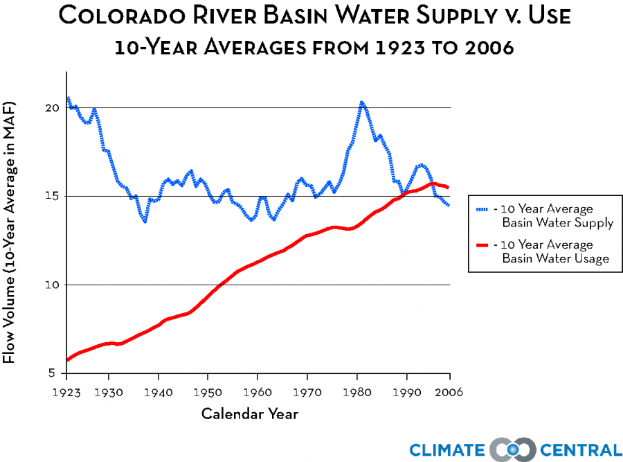
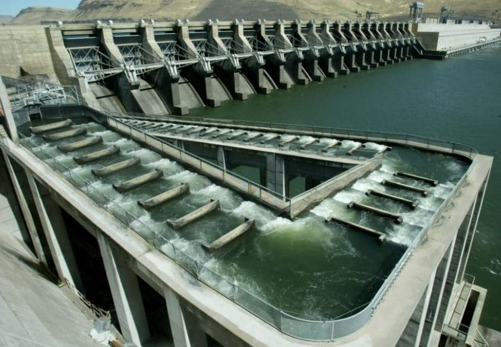

Individual Impact
In todays world, an individual does not have the ability to solve systemic issues like the damage to the Colorado River on their own. However, if each individual took owenership of their damage on the river, we would be in a much better place. The first way that you can help protect the Colorado river is obvious. You can make efforts to reduce the ammount of water that you use in areas nearby the river. The Colorado river is currently used to provide water to "40 million people for municipal use and supply water to irrigate nearly 5.5 million acres of land". If all of these people and farmers reduced their water use even slightly, it would have a huge impact on the health of the river.
Here are some links to resources you can use to help reduce your individual impact.
Voting on Issues
A big takeaway from this site should be that much of the legislation that has protected the river in the past is ineffective. It is important that we propose effective legislation to protect the river as well as to vote on any ballot issues that pertain to the Colorado river.
Back in 2020, on the Colorado ballot there was an issue title 7a. This proposed issue would increase property taxes by "$1.90 per year for every $100,000 of assessed residential home value". This means if you have a $400,000 dollar home, you would pay an extra 4 dollars a year twaoards conservation efforts which is pretty insignificant for the individual. and use the tax to help fund the Colorado River Water Conservation District. Thankfully, Colorado voters were able to pass the issue and help protect the river. This tax hike has been used to fund numerous conservation projects in Colorado. You can view some of them here. Hopfuelly you can see how effective legislation has the ability to make a real difference.
This is an image of a fish passage on a dam. Funding from ballot measure 7a is being used to create a fish passage under an impassable section of highway i70.
Conclusions
Thank you for viewing all of the pages of this interactive website. I hope you were able to better understand the issues that surround the Colorado River and how to help. The Colorado River supports so many people and ecoystems but it is clearly in danger. It is time that we supported the river in the same way that it has supported us. Anyone is able to help by taking the time to monitor their individual impacts on the river and voting on policies to protect the river.